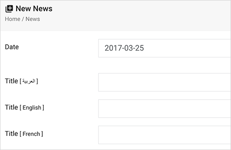

You can change the Arabic language to your home language easily in just 1 minute. Suppose you want to change [ar] to French [fr] language.
'code' => 'ar',
'boxCode' => 'ar',
'boxCodeOther' => 'en',
NOTE: This is a brief to show you the road plan for adding new languages. You need to have a good knowledge of PHP and Laravel framework. If you want to save your time, You can order a language add-on service for only $60. You can contact me on : eng.mondi@gmail.com
SmartLaravelCMS is coming with two default languages ( English & Arabic ), With ability to enable or disable every one. These are steps to modify and add more languages . In my example i will add French language [ fr ] :
'direction' => 'ltr',
'code' => 'fr',
'lang' => 'FR',
'left' => 'left',
'right' => 'right',
'arabicBox' => '[ العربية ]',
'englishBox' => '[ English ]',
'frenchBox' => '[ French ]', // ADD This new VAR to backLang.php in all OLD languages folders
'rtl' => 'rtl',
'ltr' => 'ltr',
'boxCode' => 'fr', // Important as it will define DB columns table like (title_fr, details_fr ... etc.)
'boxCodeOther' => 'en', // Default lang for if (title_fr) is empty it will return (title_en)
'translations' => 'Traductions',
'calendarLanguage' => 'fr', // Define your new calendar language
@if(Helper::GeneralWebmasterSettings("ar_box_status"))
<option value="ar" {{ (trans('backLang.code')=="ar")?"selected='selected'":"" }}>{{ strip_tags(trans('backLang.arabicBox')) }}</option>
@endif
@if(Helper::GeneralWebmasterSettings("en_box_status"))
<option value="en" {{ (trans('backLang.code')=="en")?"selected='selected'":"" }}>{{ strip_tags(trans('backLang.englishBox')) }}</option>
@endif
TO:
@if(Helper::GeneralWebmasterSettings("ar_box_status"))
<option value="ar" {{ (trans('backLang.code')=="ar")?"selected='selected'":"" }}>{{ strip_tags(trans('backLang.arabicBox')) }}</option>
@endif
@if(Helper::GeneralWebmasterSettings("en_box_status"))
<option value="en" {{ (trans('backLang.code')=="en")?"selected='selected'":"" }}>{{ strip_tags(trans('backLang.englishBox')) }}</option>
@endif
@if(Helper::GeneralWebmasterSettings("fr_box_status"))
<option value="fr" {{ (trans('backLang.code')=="fr")?"selected='selected'":"" }}>{{ strip_tags(trans('backLang.frenchBox')) }}</option>
@endif
Schema::create('topics', function (Blueprint $table) {
$table->increments('id');
$table->string('title_ar')->nullable();
$table->string('title_en')->nullable();
$table->string('title_fr')->nullable(); // the new column for title in french
$table->longText('details_ar')->nullable();
$table->longText('details_en')->nullable();
$table->longText('details_en')->nullable(); // the new column for details in french
$table->date('date')->nullable();
$table->tinyInteger('video_type')->nullable();
$table->string('photo_file')->nullable();
$table->string('attach_file')->nullable();
$table->string('video_file')->nullable();
$table->string('audio_file')->nullable();
$table->string('icon')->nullable();
$table->tinyInteger('status');
$table->integer('visits');
$table->integer('webmaster_id');
$table->integer('section_id');
$table->integer('row_no');
$table->string('seo_title_ar')->nullable();
$table->string('seo_title_en')->nullable();
$table->string('seo_title_fr')->nullable(); // the new column for seo_title in french
$table->string('seo_description_ar')->nullable();
$table->string('seo_description_en')->nullable();
$table->string('seo_description_fr')->nullable(); // the new column for seo_description in french
$table->string('seo_keywords_ar')->nullable();
$table->string('seo_keywords_en')->nullable();
$table->string('seo_keywords_fr')->nullable(); // the new column for seo_keywords in french
$table->integer('created_by')->nullable();
$table->integer('updated_by')->nullable();
$table->timestamps();
});
// Main Menu
$Menu1 = new Menu();
$Menu1->row_no = 1;
$Menu1->father_id = 0;
$Menu1->title_ar = "القائمة الرئيسية";
$Menu1->title_en = "Main Menu";
$Menu1->title_fr = "Main Menu"; // add the default data in the all new columns like this one
$Menu1->status = 1;
$Menu1->type = 0;
$Menu1->cat_id = 0;
$Menu1->link = "";
$Menu1->created_by = 1;
$Menu1->save();
Schema::create('webmaster_settings', function (Blueprint $table) {
$table->increments('id');
$table->tinyInteger('ar_box_status');
$table->tinyInteger('en_box_status');
$table->tinyInteger('fr_box_status'); // The new settings for fr language
$table->tinyInteger('seo_status');
Also add the new default setting on seeds/WebmasterSettingsSeeder.php
php artisan migrate:rollback
php artisan migrate
php artisan db:seed
@if(Helper::GeneralWebmasterSettings("fr_box_status"))
{!! Form::text('title_fr','', array('placeholder' => '','class' => 'form-control','id'=>'title_fr'
,'required'=>'', 'dir'=>trans('backLang.ltr'))) !!}
@endif
For example to add a text area with editor for details in french:
@if(Helper::GeneralWebmasterSettings("fr_box_status"))
{!! Form::textarea('details_fr','', array('ui-jp'=>'summernote','placeholder' => '','class' => 'form-control'
, 'dir'=>trans('backLang.ltr'),'ui-options'=>'{height: 300}')) !!}
@endif
You need to do that for all Create & edit files.
$Topic = new Topic;
$Topic->row_no = $next_nor_no;
$Topic->title_ar = $request->title_ar;
$Topic->title_en = $request->title_en;
$Topic->title_fr = $request->title_fr; // add the new french title
$Topic->details_ar = $request->details_ar;
$Topic->details_en = $request->details_en; // add the new french details
Do the same for the other controllers.

Once again, thank you so much for purchasing this dashboard. As I said at the beginning, I'd be glad to help you if you have any questions relating to this dashboard. No guarantees, but I'll do my best to assist. If you have a more general question relating to the themes on ThemeForest, you might consider visiting the forums and asking your question in the "Item Discussion" section.
MMondi